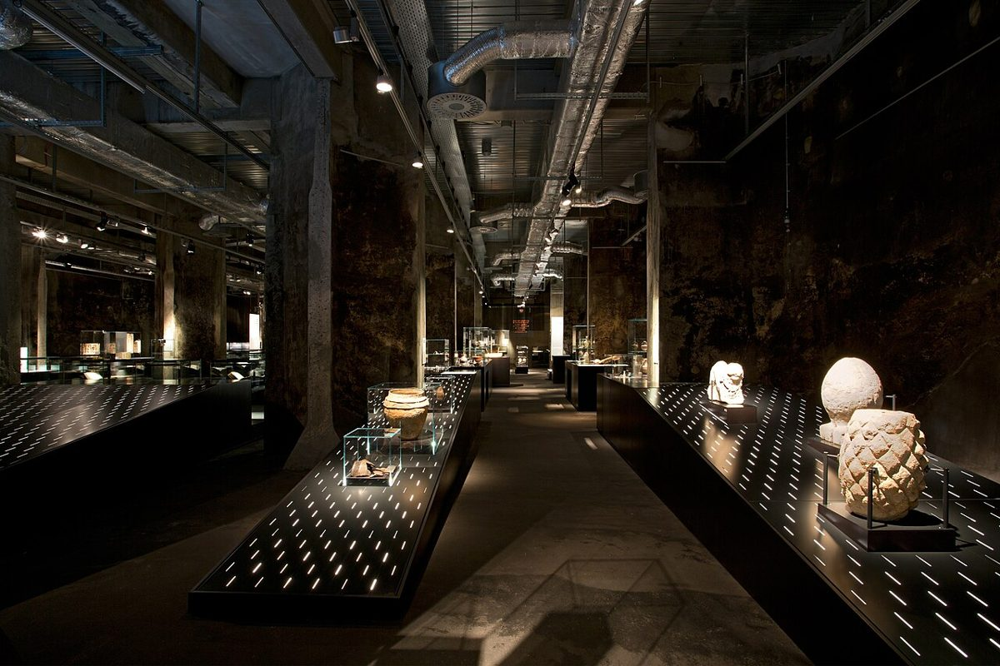

探索德国鲁尔区Zollverein：工业遗产与文化魅力

德国鲁尔区的Zollverein是一个独特的地方，它将工业遗产与现代文化完美融合，是旅行者不可错过的目的地。无论是历史爱好者、建筑迷还是艺术爱好者，这里都能找到属于自己的乐趣。接下来，我们将为你提供关于Zollverein的实用旅行建议，包括如何到达、最佳旅行时间、必游亮点以及当地美食。
如何到达Zollverein
Zollverein位于德国北莱茵-威斯特法伦州的埃森市，交通十分便利。如果你从德国其他城市出发，可以乘坐火车到达埃森中央火车站，然后转乘有轨电车或巴士直达Zollverein园区。自驾游的朋友也可以通过高速公路A42或A40轻松到达，园区内设有停车场。
最佳旅行时间
Zollverein全年开放，但最佳的旅行时间是春末到初秋（5月至9月）。这段时间天气宜人，适合户外参观。如果你对冬季的节日氛围感兴趣，圣诞节期间的Zollverein也有特别的灯光装置和市场活动，别有一番风情。
Zollverein的5大亮点
1. Zollverein煤矿工业园
作为联合国教科文组织世界文化遗产，Zollverein煤矿工业园是鲁尔区工业历史的象征。你可以参观旧煤矿建筑，了解煤炭开采的历史，并登上高耸的矿井塔，俯瞰整个园区。
2. 红点设计博物馆
红点设计博物馆位于园区内的一座旧锅炉房中，展示了全球最具创意的设计作品。这里是设计爱好者的天堂，展览内容丰富多样，从产品设计到平面艺术应有尽有。
3. Ruhr博物馆
Ruhr博物馆深入探讨了鲁尔区的历史、文化和社会发展。通过互动展览和珍贵档案，你可以全面了解这个地区从工业中心到现代文化枢纽的转变。
4. Zollverein公园
Zollverein公园是一个充满绿意的休闲空间，非常适合散步或骑自行车。这里还有许多艺术装置和雕塑，与工业背景形成鲜明对比，令人耳目一新。
5. Zollverein文化活动
Zollverein全年举办各种文化活动，包括音乐会、艺术展览和戏剧表演。在旅行前，可以查看园区的活动日历，安排一场特别的体验。
当地美食推荐
在Zollverein参观后，不妨尝尝当地的特色美食。鲁尔区以其丰盛的菜肴闻名，推荐尝试'Currywurst'（咖喱香肠）和'Pommes'（薯条），这是当地的经典小吃。如果你想吃得更正式一些，可以试试'Rheinischer Sauerbraten'（莱茵地区酸炖牛肉），这是一道传统的主菜，味道浓郁。园区内也有几家餐厅和咖啡馆，提供简餐和饮品，方便游客休息。
总之，Zollverein是一个充满魅力的旅行目的地，无论你是对历史感兴趣，还是被现代艺术吸引，这里都能满足你的需求。希望这篇指南能为你的旅程提供帮助，祝你玩得开心！
Haiktec
Text mit KI erstellt und automatisch geprueft.